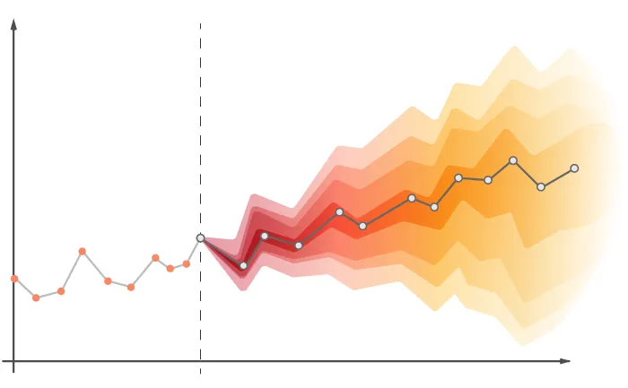

#This lab...
library(tidyquant)
library(fpp3)
carrot <- tq_get(c("WPU01130212"),get = "economic.data",from="2007-08-01")Week 7 Lab: Forecasting and Prediction Intervals

This Lab Contributes to Course Objectives: 1, 2, 3, 4, 7, 8
Learning Objectives R
Understand the statistics of prediction intervals
Understand how to conduct a forecast with prediction intervals in R
Learning Objectives Tableau
Plot your prediction intervals
Using Tableau stories to present
Embedding Tableau in Powerpoint to present
R: Time Series Forecast and Prediction Interval
Last week we learned how to build a forecast from the components of the time series decomposition (Trend, Seasonality, and Residual). We made some relatively simple assumptions about how these components would behave in the future. R has many time series analysis and forecasting tools. Because the libraries containing the tools are open source and written by R users, the structure of the functions and object created by them may vary. We are going to start using a new library called fpp3 that you will need to install if it isn’t already installed. fpp3 is a meta-library that loads a series of time series forecasting libraries that make time series analysis and forecasting much easier. The library fpp3 was created as the companion to the textbook Forecasting: Principles and Practice (3rd ed)]. The main libraries we will be using are fable and feasts. fable contains many time series models that you might want to use to understand and forecast data. feasts contains a set of dplyr-like tools to work with time series data. This set of packages makes it very easy to run models and extract the information you want.
The goal today is to look at prediction intervals, which are related to confidence intervals but pertain to your forecast.
Step 1: Load your data
First, let’s load the time series data into R and set up your script (description, working directory, load packages). We will continue using the carrot price data.
Step 2: Convert your data into a time series object
Like last week, we need to convert our data into a time series dataframe called a tsibble:
#Prep data
carrot_ts <- carrot %>%
select(date,price) %>% #select only the date and price variables
mutate(date=yearmonth(date)) %>% #convert the date into yearmonth format so the models understand the unit of observation
as_tsibble() #convert the data to a tsibble object - similar to a tibble or data.frame but for time series dataThis will create a new time series tibble object called carrot_ts.
Step 3: Tidy forecast workflow
Again, our objective is to build a forecast model and extract the key pieces of information, so that we can send them to Tableau. One of the benefits of the fpp3 package is that it simplifies model building process in a structure that is compatible with the pipe, %>%. We will recreate the forecasting model that we built in parts last week. Recall that we first decomposed the carrot price time series into trend, seasonal, and random components, and built a forecasting model based on each component, then put it all back together.1 That process can be called a workflow - a set of steps for completing a task. We will translate the workflow we built into the structure of the new package.
3a: Define the model
We have the time series data prepared for modeling. Now, we need to define the model. We defined individual forecasts for each of the three components in week 2. We used the function, forecast, which uses an exponential smoothing method by default. We can be more explicit in defining an exponential smoothing model of each component.
#Fit the model
fit <- carrot_ts %>%
model(my_ets=ETS(price ~ trend(method="A") + season(method="A") + error(method="A"))) #fit modelThe function model is used to define the forecasting model. In this case, we define an exponential smoothing model, ETS(), based on three components: trend, season, and error. The argument method="A" in each component tells the model that we want those components to be additive rather than multiplicative. Finally, we define the model as my_ets. In short, this defines the model that we built in parts in week 2. Inspecting fit shows that this just defines the model but doesn’t do anything with it.2
Note that model is a powerful function capable of specifying many models at once. You may want to compare model fits or estimate models on several price series simultaneously. See more information here.
3b: Forecast the model
Now that we have specified the model, we need to actually run the forecast. We will use a function called forecast() from the fabletools library (related to fable). However, this function is different from the previously used forecast function. When there are potential conflicts between functions with the same name from different libraries, you can specify the library, so R does not try to use the wrong one. We specify that we want to forecast our ETS model for 5 years. The function understands that you want 5 years worth of monthly forecasts (remember the data is stored as monthly data); this is equivalent to h=60 because 60 months is 5 years.
#Forecast the model
carrot_forecast <- fit %>%
fabletools::forecast(h="5 years") #forecast model for 5 yearsInspect carrot_forecast and you will see that it contains mean and variance information for each month of the 5 year forecast.
3c: Plot the forecast
Finally, you want to visualize your forecast. You can pass carrot_forecast into the function autoplot() that understands how to read forecast output. Note that autoplot() plots only the forecast by default. Adding the observed data carrot_ts tells the function to include the observed data in the plot.
#Plot the forecast
autoplot(carrot_forecast,carrot_ts) #forecast model for 5 yearsYou can see that the mean, the 80%, and the 90% prediction intervals are included.
See Hyndman and Athanasopoulos for more information on developing a workflow with these time series tools.
Prediction intervals
The plot generated by autoplot() indicates that the model is estimating prediction intervals. There is a function hilo() from the fable library to extract them. However, this function creates a column with both upper and lower prediction intervals packed into a single variable. Fortunately, there is a function for separating the values into their own variables called unpack_hilo(). You need to specify the name of the variable; in this case 95%.
#Extract prediction interval
carrot_forecast_out <- carrot_forecast %>%
hilo(level = 95) %>% #extract 95% prediction interval
mutate(
lower = `95%`$lower,
upper = `95%`$upper
) #unpack into own columns named lower and upperPreparing to export
Finally, we want to prepare the data for export to Tableau. Recall that our original data had two variables: date and price. Our tsibble carrot_forecast_out has date and price, but the price variable is a distribution rather than a value. However, the variable .mean contains the forecast mean, so we can remove price and rename .mean. Remember that you can rename and select variables in the same command.
#Prepare data for export
part2 <- carrot_forecast_out %>%
select(date,price=.mean,`lower`,`upper`)
to_export <- bind_rows(carrot_ts,part2)
write_csv(to_export,"carrot_forecast.csv")Tableau
Plotting prediction intervals in Tableau
Last time we showed that if you apply Tableau’s forecasting features, Tableau will automatically plot prediction intervals for you. But what if you want to plot the prediction intervals you created in R instead?
Option 1: Don’t worry about shading
Connect to the
carrot_forecastdataset you just exported from R.Create two new calculated fields. One called
Observed Priceand one calledForecasted Price. You can create both of these using an IF THEN statement, forObserved Pricewe want all prices through the end of our data (January 1, 2023):IF [Date] <= #January 1, 2023# THEN [Price] ELSE NULL END. You should write a similar statement to getForecasted Priceafter this date…Create a line chart that includes
Observed Price,Forecasted Price,Upper, andLower.Change the colors to something useful. Let’s do the same gray shade for both upper and lower.
Option 2: Let’s jump through some hoops to add shading
Duplicate your previous worksheet.
Change your chart to an Area Chart.
“unstack” your lines by going to
Analysis->Stack Marks->OffRearrange the order of your forecast and prediction intervals: Lower, Forecast, Upper.
Change your colors - white for
Observed PriceandLower, gray forUpperandForecasted Price.Create a new line graph by dragging the original
Pricefield to the Rows Shelf.Change this new pane to a line chart.
Change the colors to reflect forecasted and original prices by creating a new calculated field that equals “Forecasted Price” after January 1, 2023, and that equals “Observed Price” before then. Drag this calculated field to the Colors Card.
Combine your charts by creating a dual axis. Right click the Y-axis -> Select
Dual AxisSychronize your axes. Right click the second Y-axis -> Select
Synchronize Axis. You can then hide this axis. Right click -> ClickShow Headerto de-select it.Notice that the area under the lines no longer has your y-axis gridlines. Let’s just get rid of all the gridlines to make this look a bit nicer. Right click on your chart -> select
Format. In the format pane, naviage to the lines icon, change Grid Lines toNone.Finally, go back to your last sheet. Notice that the colors between your sheets are linked. Tableau does this to ensure your sheets are cohesive, but sometimes we want different colors for the same variable. The workaround for this is to duplicate each of the variables you want to assign a different color and use those in this sheet instead of the original variables.
Presenting Tableau Option 1: Stories
Tableau Desktop includes its own method for presenting your analyses. These are called stories. This tutorial will show you how to put together a simple story.
Create a new story by clicking the
New Storytab at the bottom of the window. Change the size to Powerpoint.Let’s create an intro slide by creating a new Dashboard. Add a background image and a text box.
Add your intro slide to your story.
Add a new (blank) story point and bring in one of your worksheets. Give this story point a useful title.
See what your story looks like in presentation mode. Note that you can hide the story title to make this look a bit nicer.
Note that if you like the formatting features of Powerpoint for text slides, you can also create these slides in powerpoint, export them as images and then add those images to Dashboards.
Presenting Tableau Option 2: Embed in Powerpoint
You can also embed interactive Tableau dashboards from your Tableau Public account directly into powerpoint. This will require you to install the Web Viewer Add-in. I won’t walk you through how to do this right now, but you can follow these instructions to set this up: https://vizartpandey.com/how-to-embed-tableau-dashboard-in-a-powerpoint-presentation/?amp